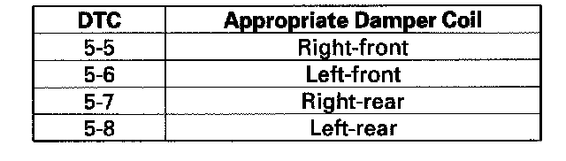
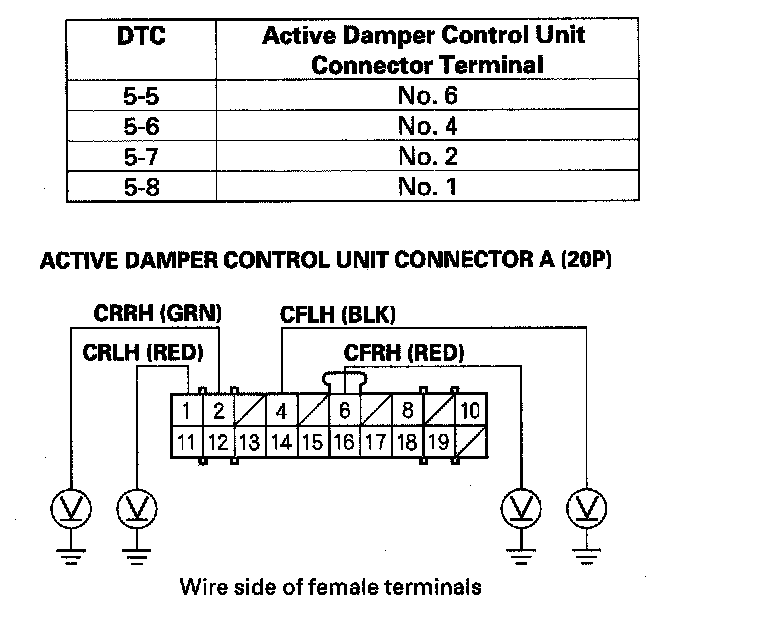
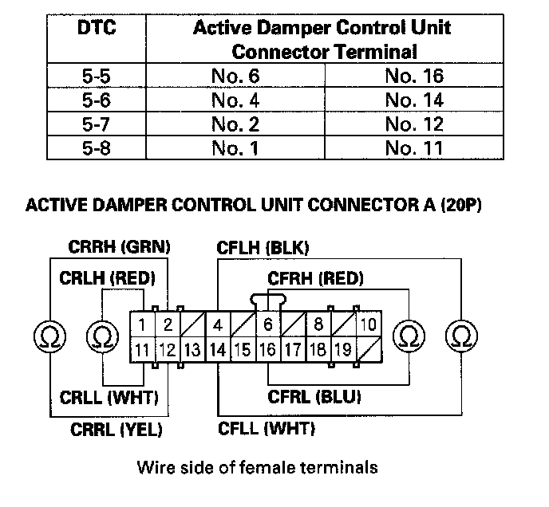
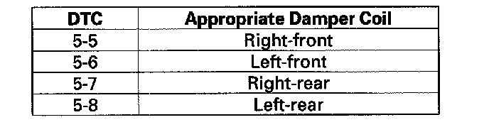
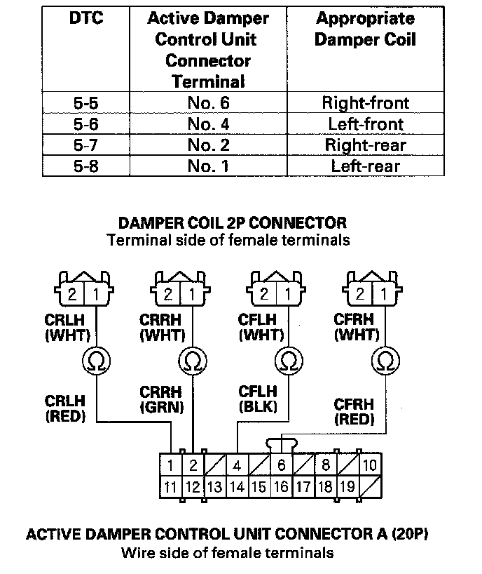
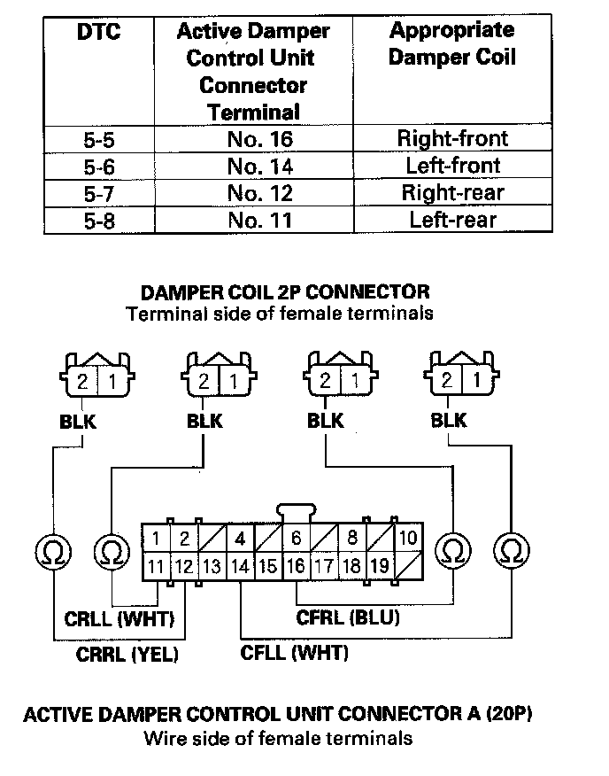
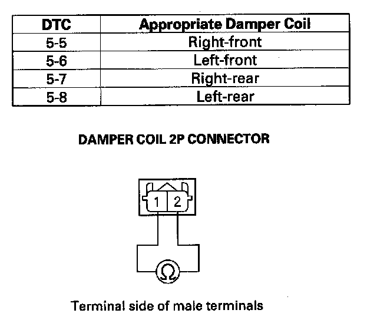

DTC 5-7
DTC 5-5: Active Damper Control Unit Internal Right-front Damper Coil Drive Circuit Stuck OFFDTC 5-6: Active Damper Control Unit Internal Left-front Damper Coil Drive Circuit Stuck OFF
DTC 5-7: Active Damper Control Unit Internal Right-rear Damper Coil Drive Circuit Stuck OFF
DTC 5-8: Active Damper Control Unit Internal Left-rear Damper Coil Drive Circuit Stuck OFF
1. Turn the ignition switch OFF.
2. Disconnect the appropriate damper coil 2P connector, then reconnect the connector.

3. Turn the ignition switch ON (II).
4. Clear the DTC with the HDS.
5. Turn the ignition switch OFF.
6. Start the engine.
7. Do the DAMPER FORCE OPERATION in the ACTIVE DAMPER SYSTEM INSPECTION MENU with the HDS.
8. Check for DTCs with the HDS.
Is DTC 5-5, 5-6, 5-7, or 5-8 indicated?
YES - Go to step 9.
NO - Intermittent failure at this time. Check for poor or loose connections between the damper coil and the active damper control unit.
9. Turn the ignition switch OFF.
10. Disconnect active damper control unit connector A (20P).
11. Turn the ignition switch ON (II).
12. Measure voltage between body ground and the appropriate active damper control unit connector A (20P) terminal.

Is there battery voltage?
YES - Repair short to power in the wire between the appropriate damper coil and the active damper control unit, then go to step 18.
NO - Go to step 13.
13. Turn the ignition switch OFF.
14. Measure resistance between the appropriate active damper control unit connector A (20P) terminals (see table).

Is the resistance between 0.6-2.0 Ohms?
YES - Check for loose terminals in the active damper control unit connector A (20P). If the terminals are OK, replace the active damper control unit then go to step 20.
NO - Go to step 15.
15. Disconnect the appropriate damper coil 2P connector.

16. Check for continuity between the appropriate active damper control unit connector A (20P) terminal and the appropriate damper coil 2P connector terminal No. 1 (see table).

Is there continuity?
YES - Go to step 17.
NO - Repair open in the wire between the damper coil and the active damper control unit, then go to step 19.
17. Check for continuity between the appropriate active damper control unit connector A (20P) terminal and the appropriate damper coil 2P connector terminal No. 2 (see table).

Is there continuity?
YES - Go to step 18.
NO - Repair open in the wire between the damper coil and the active damper control unit, then go to step 20.
18. On the damper, check for continuity between the appropriate damper coil terminals No. 1 and No. 2.

Is there continuity?
YES - Repair open in the wire (CFRL, CFLL, CRRL, or CRLL line) between the damper coil and active damper control unit, then go to step 19.
NO - Replace the appropriate damper unit then go to step 20.
19. Turn the ignition switch OFF.
20. Reconnect all connectors.
21. Turn the ignition switch ON (II).
22. Clear the DTC with the HDS.
23. Start the engine.
24. Do the DAMPER FORCE OPERATION in the ACTIVE DAMPER SYSTEM INSPECTION MENU with the HDS.
25. Check for DTCs with the HDS.
Is any DTC indicated?
YES - Go to the indicated DTC's troubleshooting.
NO - Troubleshooting is complete.